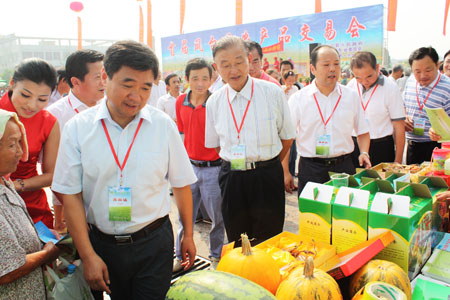

首页 > 新闻动态 > 行业资讯 > 正文
智慧农业谋转型
 |
2015-5-15 | |
 |
152+ | |
 |
安徽日报 |
近日，记者走进凤台县现代农业示范园，在一座玻璃温室中，工作人员正在包装采摘好的蔬菜，等待外运。“我们与客户签订购销协议，根据订单提供相应的蔬菜品种。”温室负责人桂棚说，今年已有近20家客户与园区签订了采购协议。
“产品卖得好，说明我们坚持的智慧农业走对了路子。 ”凤台县现代农业示范区指挥部办公室主任贺明军说，该县现代农业示范区于2013年正式启动，是该县农业领域重点建设工程，也是凤台县力求摆脱一煤独大产业模式、发力转型的大动作。园区规划总面积5万余亩，设置蔬菜标准化生产基地、优质高效粮食示范基地和循环农业示范基地等不同功能区。

“建设伊始，我们就定下用工业理念抓农业、通过科学理念谋发展的经营思路。 ”贺明军说，园区蔬菜生产基地以3万多平方米连栋温室和近6000平方米玻璃温室为主。记者看到，温室中的蔬菜培植在立体棚架上，通过智能化的长季节海绵栽培技术，将水肥一体的营养液输送至蔬菜根部。工作人员会根据蔬菜生长的不同阶段，调节温室内的湿度、温度，整个温室俨然是一个生产新鲜蔬菜的自动化工厂。
“无土栽培的好处在于，可以实现高密度连茬种植。以1000平方米为例，每平方米生产蔬菜300棵，年产量就是30万棵，可实现销售收入100万元。 ”桂棚给记者算了一笔账。据其介绍，蔬菜生长全程不需要农药，是真正的无公害绿色生产。
凤台县是煤炭资源大县。经过长期开采，已造成大面积土地沉陷，农业可利用的土地资源渐趋紧张，发展集约高效的现代农业成为一剂良方。 “将各种先进技术引入农业发展，提高土地和空间利用效率，实现高效种植，是科技兴农的最大优势。 ”贺明军说。
目前，凤台县农业示范园区7000余亩起步区已接近完成，入驻农业企业8家、各类经营组织50余家。起步区内的现代农业风情园、农业科技示范园、农耕体验园等功能分区建设正逐步推进。
Copyright©2015 菏泽市百花生物科技有限公司版权所有